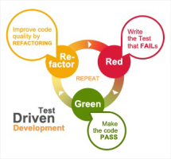

Slides
Test Driven Development (TDD)

We will introduce the concept of TDD, Unit Testing and the JUnit Framework.
JUnit and DVD.java

We will demonstrate how to use the JUnit Framework to test DVD.java.
JUnit Terminology
Having tested DVD.java using the JUnit Framework, we will now cover the terminology used in this process (assertions, annotations and fixtures).
Completing DVD app testing

Here we will review the DVDTest.java class and develop JUnit tests for more classes in the DVD app.
Labs